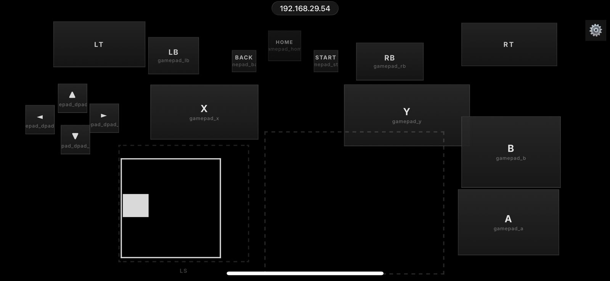
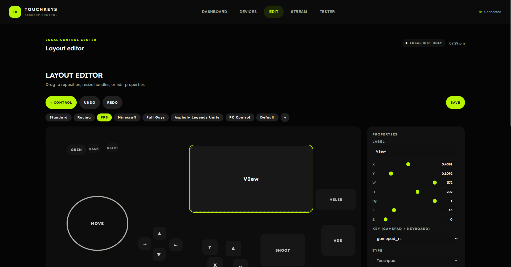
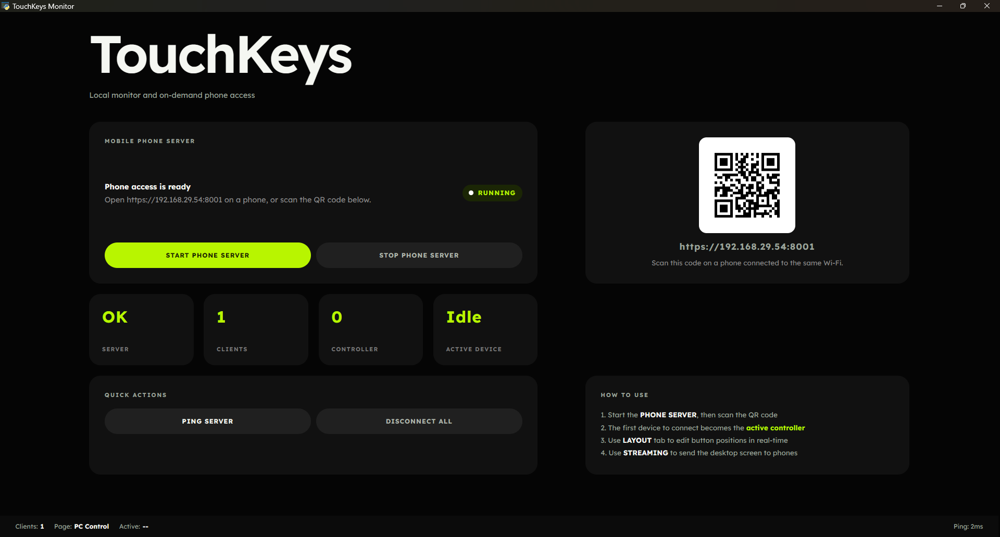
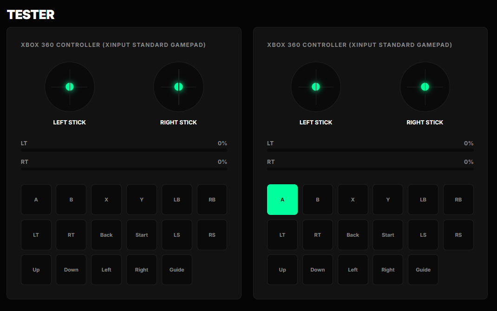

More than a gamepad
Use touch zones for buttons, analog movement, mouse gestures, or keyboard actions.
WINDOWS CONTROLLER · LOCAL WI-FI
TouchKeys turns your phone’s browser into a customizable controller for Windows. Connect over your own Wi-Fi and play with the screen you already carry.
No phone app. No account. The PC hosts the connection.

MADE TO FIT THE GAME
Start with a gamepad layout, then move, resize, and map controls around the way you play.

Move buttons and sticks in the desktop editor. Bind controls to XInput, keyboard, or mouse actions, then keep different layouts for different games.
Use touch zones for buttons, analog movement, mouse gestures, or keyboard actions.
Sensor controls can map phone orientation or movement to configured axes. Enable them from the phone when you’re ready.
Optional WebRTC screen streaming lets the phone display your desktop while it sends controls.
NO CLOUD IN THE INPUT PATH
Your PC hosts the controller page. Touch events travel back over a persistent WebSocket on your network, where TouchKeys turns them into Windows input.
Open the local monitor, then start the phone server.
localhost:8000Scan the QR code shown in the monitor, or open its local address.
HTTPS · port 8001The browser sends button, stick, trigger and gesture input.
WebSocketGamepad input reaches games through the ViGEmBus driver.
Virtual Xbox 360LOCAL BY DESIGN Phone and PC stay on your network. TouchKeys has no login or cloud account.
THE DESKTOP SIDE
The monitor is the place to start the phone server, pair devices, adjust the shared layout, and check input with the built-in gamepad tester.
Browse the project on GitHub

FIRST SESSION
Download the current Windows release from GitHub and follow its included setup notes.
ViGEmBus is required for virtual Xbox controller output. Install it on Windows if it isn’t already present.
Put both devices on the same Wi-Fi, start the phone server in the monitor, then scan its QR code. Your browser may ask you to trust the local certificate.
TOUCHKEYS / OPEN SOURCE